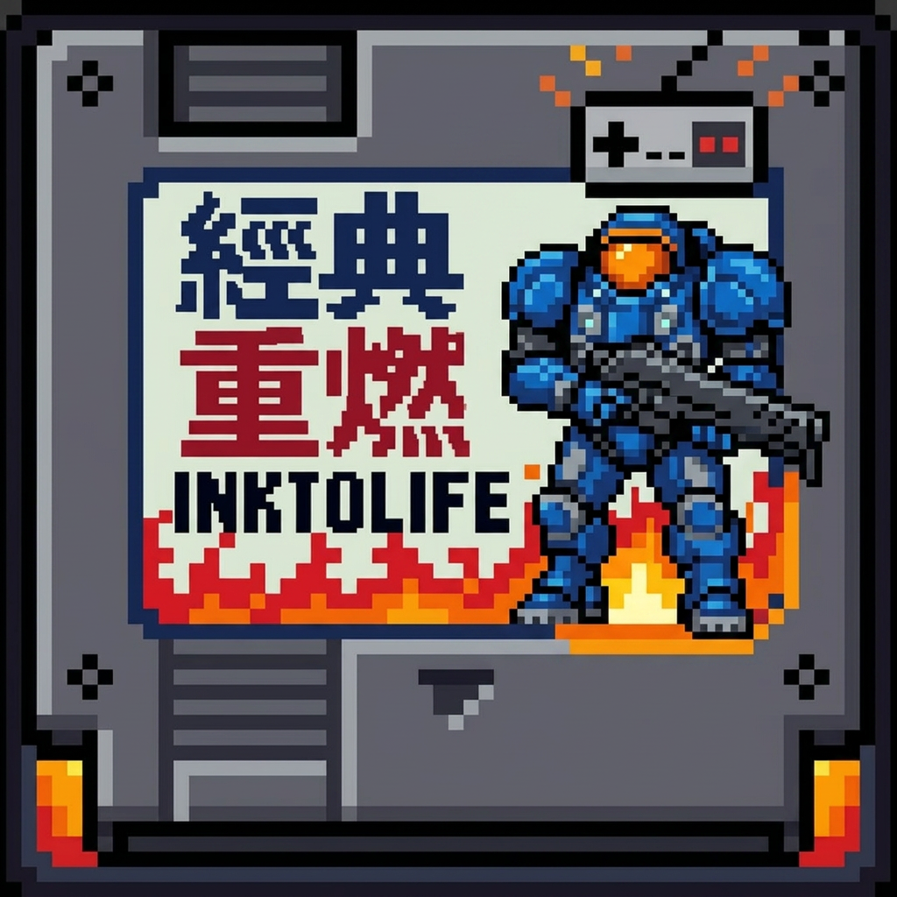

InktoLife & Pandaking联合出品
密码固定4位数字，请记住用户名和密码；目前不支持找回。
仅用于游戏存档，请勿使用银行卡或手机支付密码。英文字母不区分大小写。
正在读取存档
游戏先保存在本机，再自动同步。换设备前请确认已保存到云端。
日常备份和导入请使用主菜单的“导出存档 / 导入存档”。
本关可用军资金500。宝物和消耗品均占携带栏，可在我军间转交，每人最多8件。
战斗中可保存到任意手动档位；自动存档由系统维护。
选关使用该关固定的均衡等级；远程与辅助通常比前排低1级。连续通关和读档仍继承实际等级。开发者代码只在当前页面生效，不会写入存档。
这一关还没有战绩，等你来夺头名。
横屏可以同时看到完整战场与攻击、策略、待机等指令。